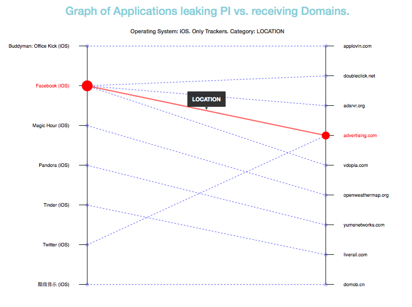

What is Recon?
The DTL Grants program is supporting ReCon, a software project that provides users more transparency and control over the information about them that is sent by their mobile applications to Internet.
Currently, users download many applications on their smartphones without knowing how their information is being sent and to who. Recon solves this problem by providing users an additional level of monitoring and control on which data is sent and who is receiving it.
How does Recon work?
Recon analyses all the traffic that is sent by mobile devices and, through machine learning, it infers when privacy leaks occur based on contextual clues. It detects when personal information is shared with other parties without requiring users active involvement. The system has been trained with more than 1000 popular iOS and Android apps and it continues learning as people use it.
What type of information leaks does Recon detect?
The system looks for three main different categories of information:
- Personal Information: Personal data such as name, gender, e-mail addresses, etc.
- Tracking Identifiers: Identifiers that are used to uniquely identify a user. They could be hardware identifiers (e.g. IMEI) or software generated ones (e.g. AndroidID)
- Location Information: Information about where users have been located.
How do I know where my information is sent?
The system divides the leakages into two main categories, distinguishing whether the receiving party is a tracker or not.
A tracker is a domain linked to companies that are known to track online activity of users across multiple domains so they can create profiles of the users. There are many public lists of trackers available, Recon has used a reference list to determine if a domain is a tracker or not.
The researchers have distinguished between leaks going to trackers vs. those going to non-trackers because any leaks sent to tracker domains are more risky for end-users privacy, as trackers tend to aggregate different data from users and they can combine and exploit it in multiple ways.
Is there any way I can get a list of apps that are leaking information?
DTL has developed a tool on top of the information gathered by Recon to make it easier for anyone to understand: i) the type of personal information that is sent, ii) the applications that are doing it, and iii) what domains are receiving the leaked personal data. The tool allows to gather different types of insights from the apps, domains and information that is leaked.
For instance, the following graph shows which iPhone Applications analyzed by ReCon are sending Location Information to trackers.
This graph shows that the Facebook app, when used, sent a user's location information to 4 different trackers (doubleclick.net, adsvr.org, vdopia.com, and advertising.com). We can also see how some of these trackers (e.g.:advertising.com) are receiving the user's location not only from Facebook but from other apps (Twitter in this example). The red line highlights the link between the Facebook iOS App to Advertising.com, which in turn is receiving information from the Twitter iOS App.
Some other example graphics can be found at the examples section.